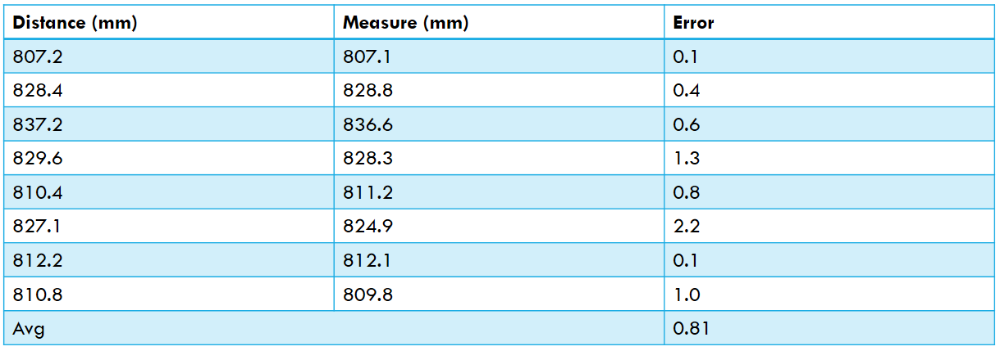

Presentation
On June 30th, we had our Final NCRAI Meeting,
Therefore, this week was dedicated for the preparation of my presentation.
Final Presentation Overview:
Demonstration
For this particular project, this sort of assessment could be done by evaluating the number of successes in the identification and pose estimation of a demo object. For better results, we took the object cracker, almost random, at various areas on a table in front of the robot, at various orientations for each of the places. The objects were located approximately 800 mm away from the camera.We applied the object detection and position estimation functions, and compared the measured distance and actual distance values. In the distance measurements taken from the input images, the offset value is applied to correct the actual distance.

In the experiment on the cracker box, the mean distance error was 0.81, and the standard deviation was 0.7, for detected object. As demonstrated through the experiment results above, the average error rate in the distance to the target object was around 1 mm. Therefore, even when assuming that an error of up to 2 mm may occur, there was no problem for the robot to pick up the object in our bin picking environment.
The prototype object detected and pose estimated successfully in various orientations. We rotated the objects 6-DOF and the object detection was quite successful.